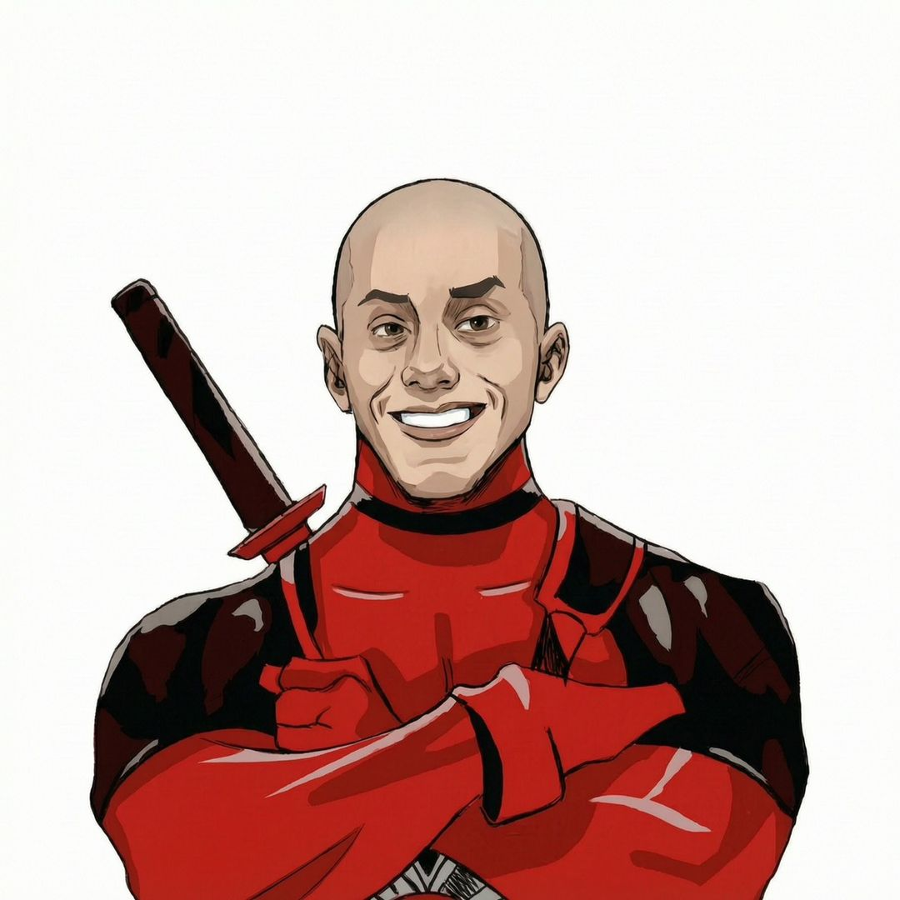

MAZ//LABPORTAL_01● التجربة جاهزة
تجربة MAZ TECH // 001
افتح بوابة
لعالم آخر
ارفع يديك أمام الكاميرا، قرّبهما لتغيير العالم، ثم باعد بينهما لتشاهد النتيجة.
تتم المعالجة على جهازك — لا يتم رفع الكاميرا أو حفظها

MAZ//LABPORTAL_01تجربة MAZ TECH // 001
ارفع يديك أمام الكاميرا، قرّبهما لتغيير العالم، ثم باعد بينهما لتشاهد النتيجة.
تتم المعالجة على جهازك — لا يتم رفع الكاميرا أو حفظها